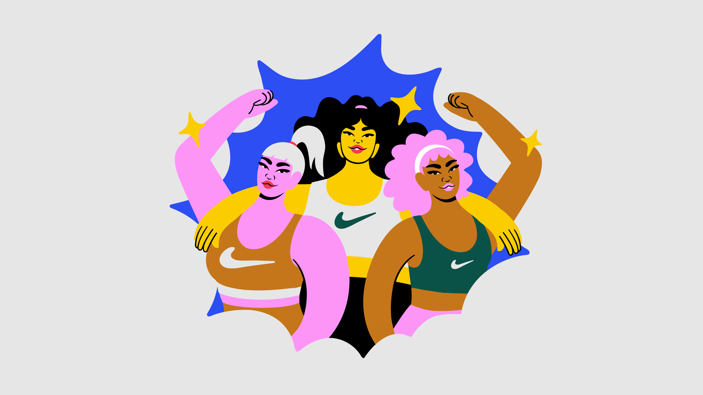
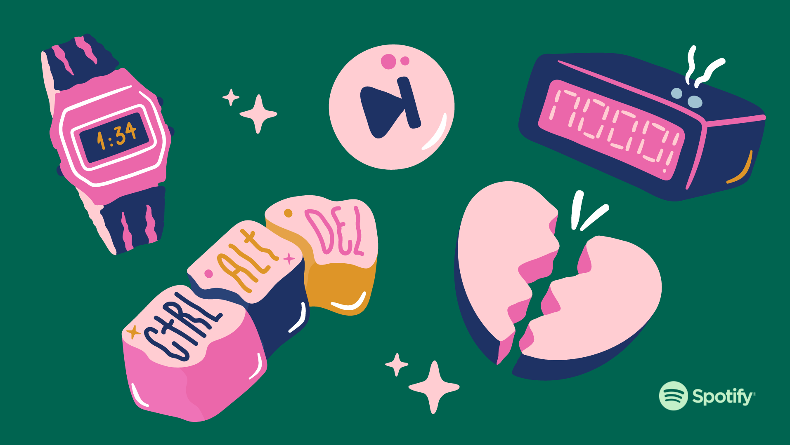
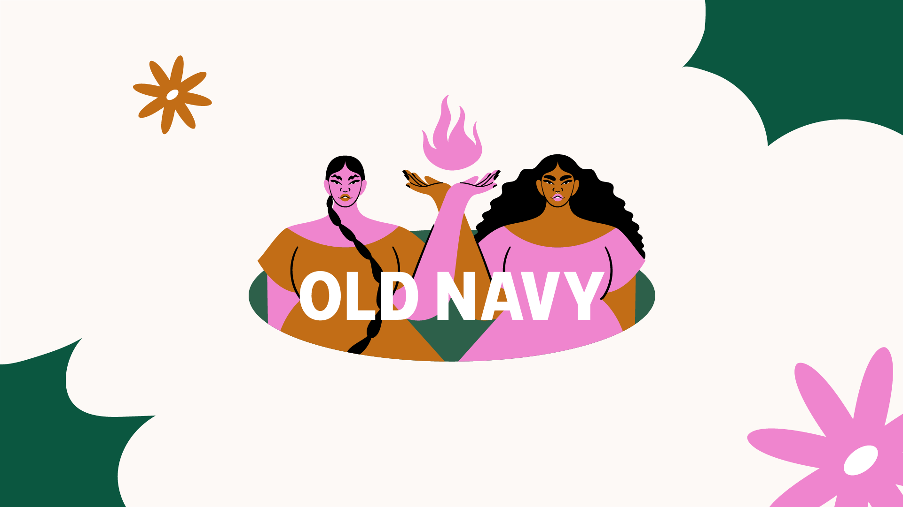

The Sports Tops campaign on the Nike Brazil portal features photos, videos, quizzes, and illustrations that aim to inspire women from real stories, and especially to help them choose the ideal sport's top for their body. Developed in partnership with the Live agency, the project has the participation of Rafa Brites, Nicolle Merhy, Bia Ferreira, Alice Yuri, Mayara Rosa, Letticia Munniz, Aisha Mbikila, and Thawany Peroli. In total 16 illustrations were created, 8 of them to be used on social media and videos as animated stickers and 8 of them as posters of each woman chosen to participate in the campaign.
For this year’s Premium for Students campaign, she went 'back to school'. She educated students about the joys of Premium life using visual and tonal cues from retro textbooks. Photography, videos, GIFs and stickers were created as part of a toolkit for some major markets across the world. This 2022 Clio Entertainment Bronze winning entry titled 'Global Movie Day Artist Showcase: Camila Rosa'. Movie Genre: Drama' was entered for Academy of Motion Picture Arts and Sciences (Oscars) by Academy of Motion Picture Arts and Sciences, Beverly Hills. It consists of 1 image. This piece is part of a campaign called 'Global Movie Day Artist Showcase' that consists of 6 elements.To celebrate Latinx Heritage Month in September, Rosa designed an exclusive tee in collaboration with Old Navy and Project We, which provides vibrant and diverse artists with a space to gain visibility and the equity they deserve. After living in NYC for a year and establishing herself back in Brazil, she has dedicated her work to highlighting social issues and subjects from an alternative perspective. This time, it's the diversity and mysticism of the Latinx community — especially Latinx women — that inspired this design.